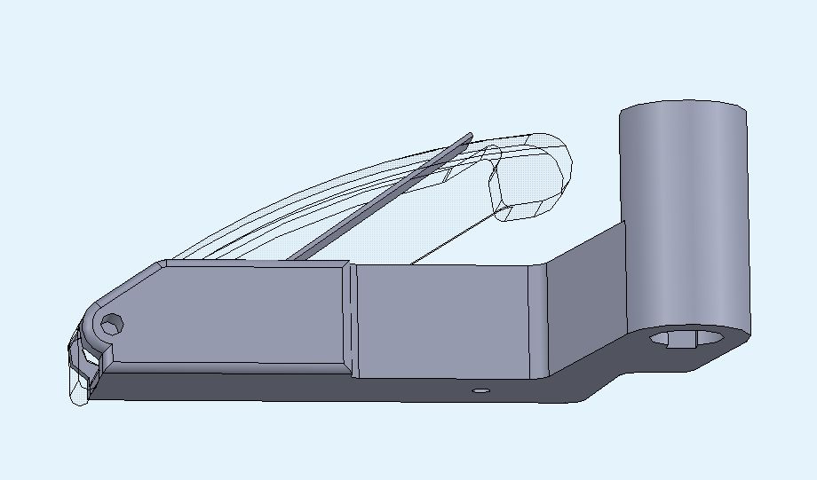
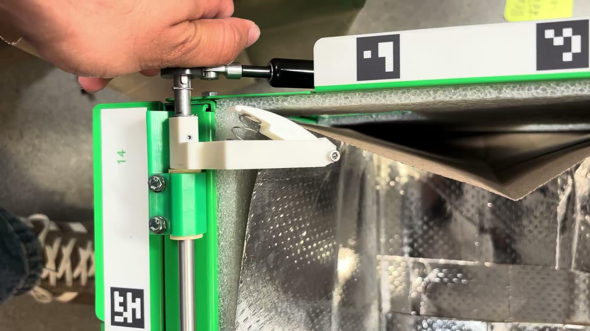
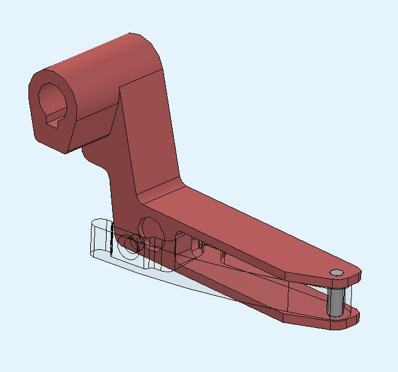

Mechanical engineering internship
Fulfil Solutions
Developed compliant bag-retention clips and tote-positioning concepts for automated grocery fulfillment.
- Role
- Mechanical Engineering Intern
- Context / status
- May–August 2025
- Tools & methods
- SolidWorks · Mechanism design · Tolerance analysis · Prototyping · Design for manufacturing

01
Overview
During my mechanical engineering internship at Fulfil Solutions, I worked on hardware for automated grocery fulfillment. My main project focused on improving the clips that hold paper bags inside totes. The mechanism needed to maintain bag tension without tearing the paper, accommodate variation in the bags and surrounding hardware, and fit within existing automation. I also developed concepts for a tote stopper intended to improve positioning repeatability along the conveyor system.
02
My contribution
I developed and compared compliant clip mechanisms, created CAD models and prototypes, and built calculations to connect spring behavior with the assembly's tolerance stackup. My work included spring selection, force and bending-stress calculations, clip and cover design, and prototype evaluation. I documented the tradeoffs between the leading concepts and prepared a technical handoff with remaining development steps. For the tote-stopper project, I led the mechanical concept work, explored linkage arrangements and actuator options, and coordinated with teammates on electrical requirements and test planning.
03
Design & development
For the clip project, I investigated how bag variation and accumulated assembly tolerances affected the travel and force the mechanism needed to provide. I explored torsion, compression, and leaf-spring approaches before developing flat-spring and conical-spring prototypes.

Testing exposed issues that calculations alone did not capture, including insufficient bag tension, sharp contact points, spring retention, and interference with nearby equipment.

I revised the geometry and spring selection while considering machining, molding, assembly, and cost.

For the tote stopper, I compared linear and rotary concepts, considered how stopping loads would pass through the mechanism, and examined packaging, tote alignment, and behavior when power was removed.
04
Results & next steps
Developed and compared flat-spring and conical-spring clip concepts. The conical-spring prototype provided promising bag tension without tearing during the reported tests; the flat-spring design offered packaging advantages but needed refinement.
The handoff documented prototype behavior, manufacturing considerations, and remaining tests. Final selection and production-readiness work remained open.